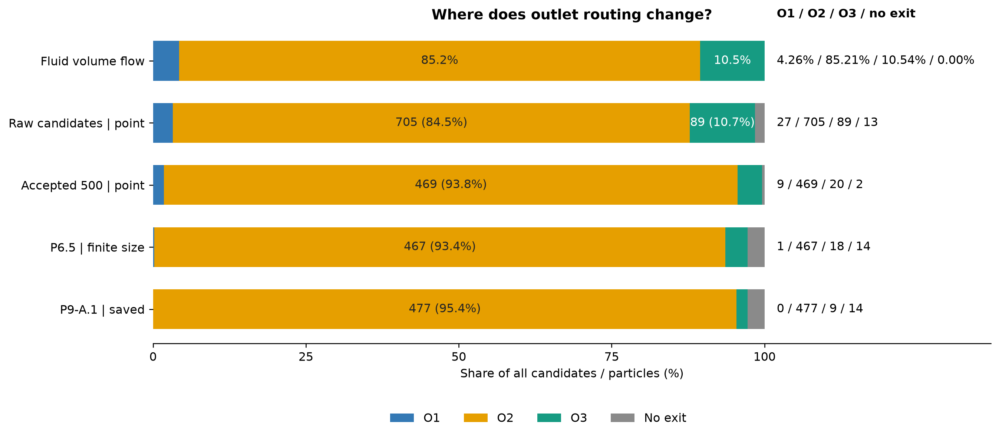
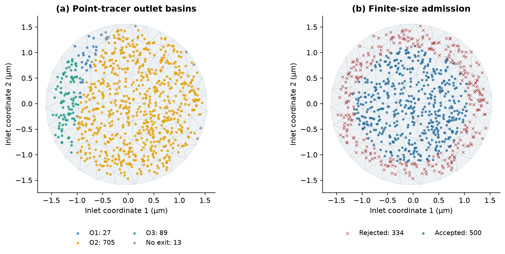
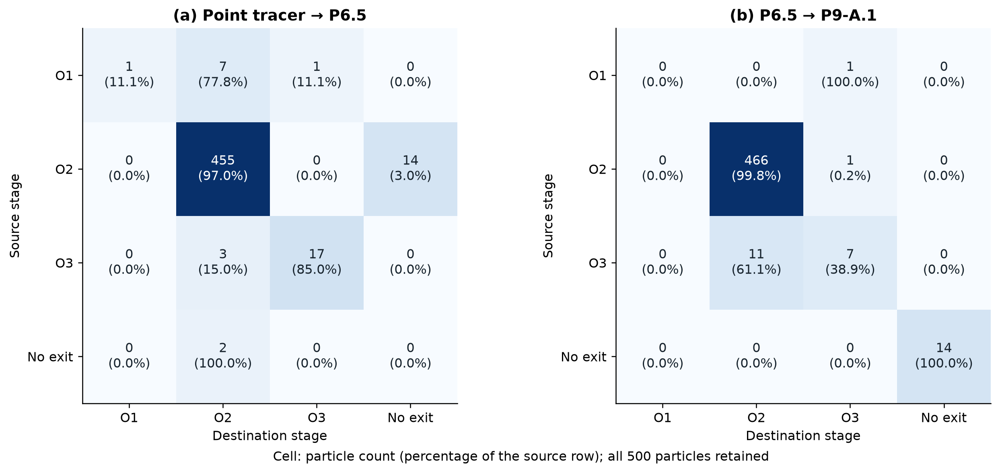
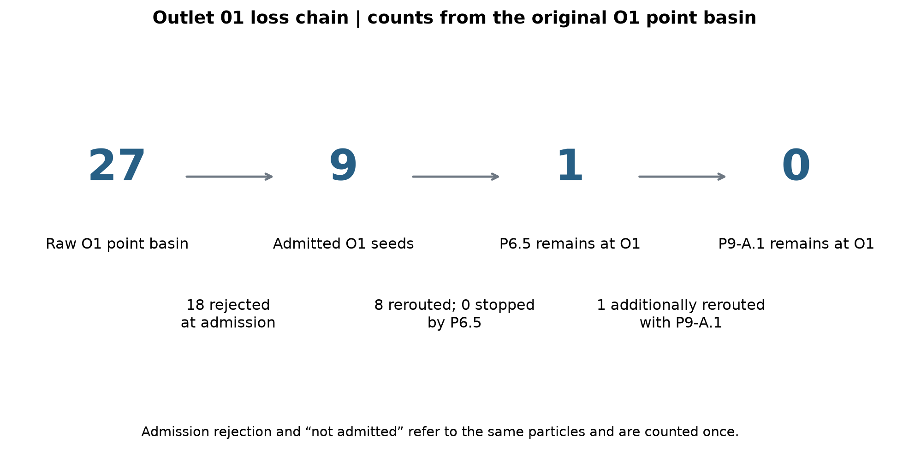
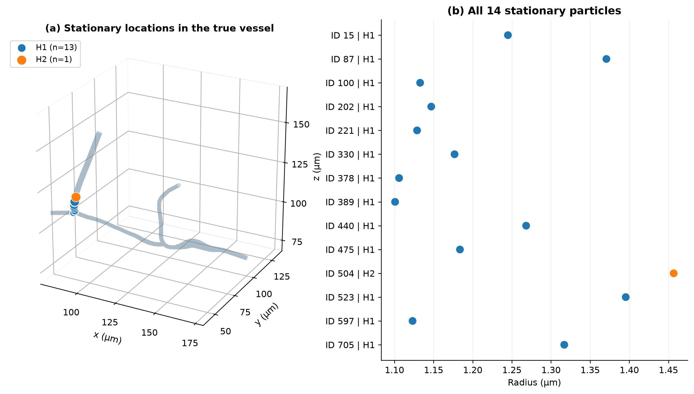
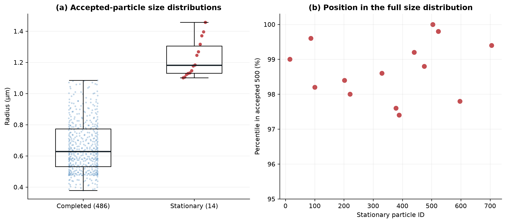
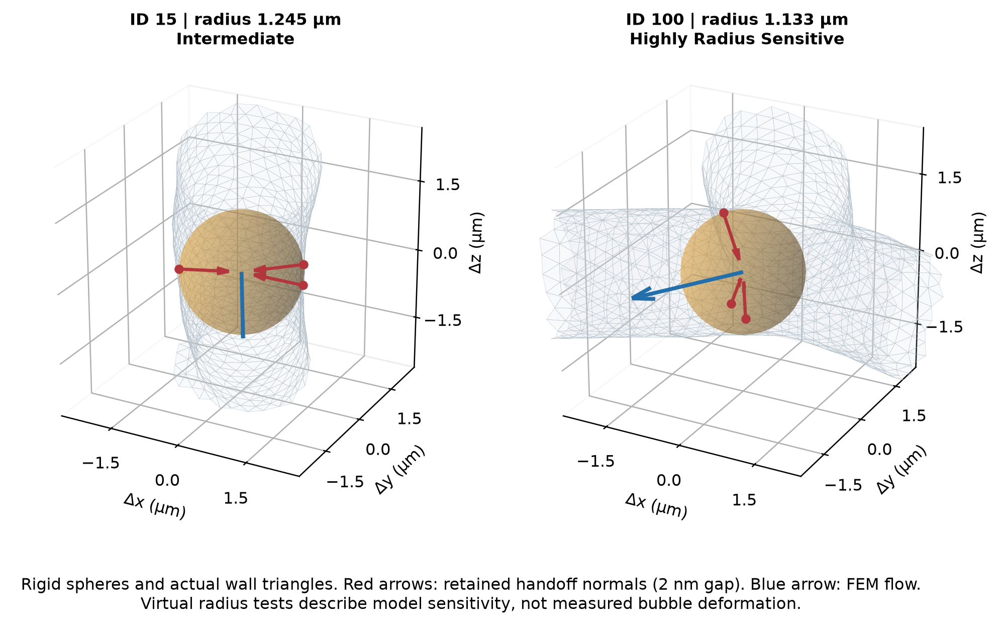
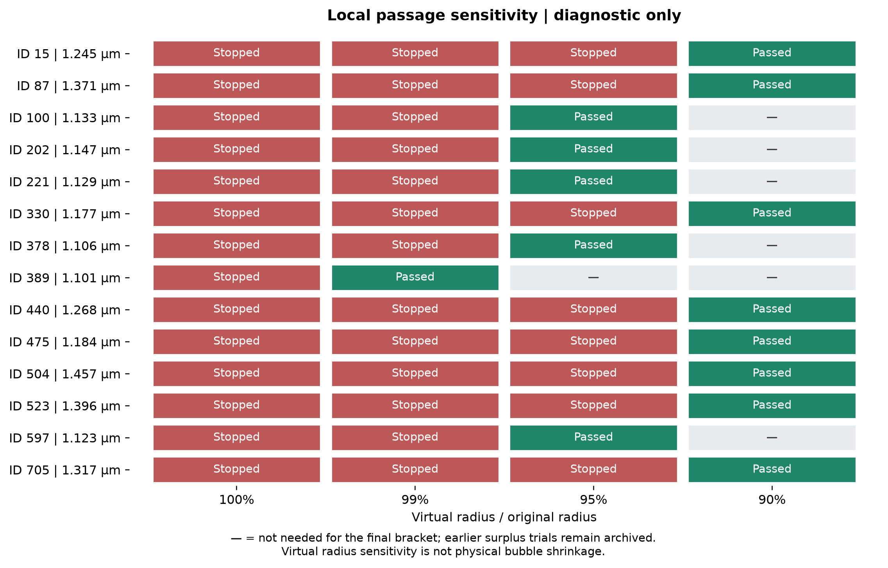

SCIENTIFIC_AUDIT_COMPLETE · 中文报告 · 机器汇总 · 复现说明

audit_summary.json, stage_splits.csv

point_completed.json, plot_geometry.json, inlet_projection.json

paired_routing.json, audit_summary.json

outlet01_loss_chain.json, paired_routing.json

stationary_audit.json, plot_geometry.json, audit_summary.json

particle_sizes.csv, stationary_audit.json, audit_summary.json

stationary_audit.json, plot_geometry.json, geometry_example_selection.json
